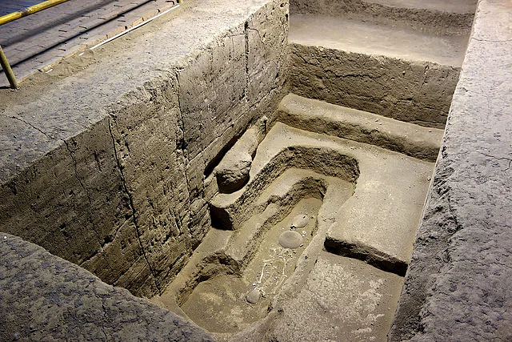

<a href="https://www.worldhistory.org/uploads/images/4034.jpg?v=1724208424-0">Banpo Village Tomb</a> © 2015 by <a href="https://www.worldhistory.org/user/dominique.chapman/">Dominique Chapman</a> is licensed under <a href="https://creativecommons.org/licenses/by-nc-sa/4.0/">CC BY-NC-SA 4.0</a>